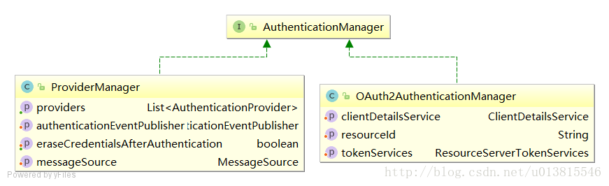

Spring Security Oauth2（三）
原文出处：https://blog.csdn.net/u013815546/article/details/76977239
作者：下一秒升华
上一篇文章中我们介绍了获取token的流程，这一篇重点分析一下，携带token访问受限资源时，内部的工作流程。
@EnableResourceServer与@EnableAuthorizationServer
还记得我们在第一节中就介绍过了OAuth2的两个核心概念，资源服务器与身份认证服务器。我们对两个注解进行配置的同时，到底触发了内部的什么相关配置呢？
上一篇文章重点介绍的其实是与身份认证相关的流程，即如果获取token，而本节要分析的携带token访问受限资源，自然便是与@EnableResourceServer相关的资源服务器配置了。
我们注意到其相关配置类是ResourceServerConfigurer，内部关联了ResourceServerSecurityConfigurer和HttpSecurity。前者与资源安全配置相关，后者与http安全配置相关。（类名比较类似，注意区分，以Adapter结尾的是适配器，以Configurer结尾的是配置器，以Builder结尾的是建造器，他们分别代表不同的设计模式，对设计模式有所了解可以更加方便理解其设计思路）
public class ResourceServerConfigurerAdapter implements ResourceServerConfigurer {
@Override
public void configure(ResourceServerSecurityConfigurer resources <1> ) throws Exception {
}
@Override
public void configure(HttpSecurity http) throws Exception {
http.authorizeRequests().anyRequest().authenticated();
}
}
<1> ResourceServerSecurityConfigurer显然便是我们分析的重点了。
ResourceServerSecurityConfigurer（了解）
其核心配置如下所示：
public void configure(HttpSecurity http) throws Exception {
AuthenticationManager oauthAuthenticationManager = oauthAuthenticationManager(http);
resourcesServerFilter = new OAuth2AuthenticationProcessingFilter();//<1>
resourcesServerFilter.setAuthenticationEntryPoint(authenticationEntryPoint);
resourcesServerFilter.setAuthenticationManager(oauthAuthenticationManager);//<2>
if (eventPublisher != null) {
resourcesServerFilter.setAuthenticationEventPublisher(eventPublisher);
}
if (tokenExtractor != null) {
resourcesServerFilter.setTokenExtractor(tokenExtractor);//<3>
}
resourcesServerFilter = postProcess(resourcesServerFilter);
resourcesServerFilter.setStateless(stateless);
// @formatter:off
http
.authorizeRequests().expressionHandler(expressionHandler)
.and()
.addFilterBefore(resourcesServerFilter, AbstractPreAuthenticatedProcessingFilter.class)
.exceptionHandling()
.accessDeniedHandler(accessDeniedHandler)//<4>
.authenticationEntryPoint(authenticationEntryPoint);
// @formatter:on
}
这段是整个oauth2与HttpSecurity相关的核心配置，其中有非常多的注意点，顺带的都强调一下：
<1> 创建OAuth2AuthenticationProcessingFilter，即下一节所要介绍的OAuth2核心过滤器。
<2> 为OAuth2AuthenticationProcessingFilter提供固定的AuthenticationManager即OAuth2AuthenticationManager，它并没有将OAuth2AuthenticationManager添加到spring的容器中，不然可能会影响spring security的普通认证流程（非oauth2请求），只有被OAuth2AuthenticationProcessingFilter拦截到的oauth2相关请求才被特殊的身份认证器处理。
<3> 设置了TokenExtractor默认的实现—-BearerTokenExtractor，这个类在下一节介绍。
<4> 相关的异常处理器，可以重写相关实现，达到自定义异常的目的。
还记得我们在一开始的配置中配置了资源服务器，是它触发了相关的配置。
@Configuration
@EnableResourceServer
protected static class ResourceServerConfiguration extends ResourceServerConfigurerAdapter {}
核心过滤器 OAuth2AuthenticationProcessingFilter（掌握）
回顾一下我们之前是如何携带token访问受限资源的： http://localhost:8080/order/1?access_token=950a7cc9-5a8a-42c9-a693-40e817b1a4b0 唯一的身份凭证，便是这个access_token，携带它进行访问，会进入OAuth2AuthenticationProcessingFilter之中，其核心代码如下：
public void doFilter(ServletRequest req, ServletResponse res, FilterChain chain){
final HttpServletRequest request = (HttpServletRequest) req;
final HttpServletResponse response = (HttpServletResponse) res;
try {
//从请求中取出身份信息，即access_token
Authentication authentication = tokenExtractor.extract(request);
if (authentication == null) {
...
}
else {
request.setAttribute(OAuth2AuthenticationDetails.ACCESS_TOKEN_VALUE, authentication.getPrincipal());
if (authentication instanceof AbstractAuthenticationToken) {
AbstractAuthenticationToken needsDetails = (AbstractAuthenticationToken) authentication;
needsDetails.setDetails(authenticationDetailsSource.buildDetails(request));
}
//认证身份
Authentication authResult = authenticationManager.authenticate(authentication);
...
eventPublisher.publishAuthenticationSuccess(authResult);
//将身份信息绑定到SecurityContextHolder中
SecurityContextHolder.getContext().setAuthentication(authResult);
}
}
catch (OAuth2Exception failed) {
...
return;
}
chain.doFilter(request, response);
}
整个过滤器便是oauth2身份鉴定的关键，在源码中，对这个类有一段如下的描述
A pre-authentication filter for OAuth2 protected resources. Extracts an OAuth2 token from the incoming request and uses it to populate the Spring Security context with an {@link OAuth2Authentication} (if used in conjunction with an {@link OAuth2AuthenticationManager}).
OAuth2保护资源的预先认证过滤器。如果与OAuth2AuthenticationManager结合使用，则会从到来的请求之中提取一个OAuth2 token，之后使用OAuth2Authentication来填充Spring Security上下文。
其中涉及到了两个关键的类TokenExtractor，AuthenticationManager。相信后者这个接口大家已经不陌生，但前面这个类之前还未出现在我们的视野中。
OAuth2的身份管理器–OAuth2AuthenticationManager（掌握）
在之前的OAuth2核心过滤器中出现的AuthenticationManager其实在我们意料之中，携带access_token必定得经过身份认证，但是在我们debug进入其中后，发现了一个出乎意料的事，AuthenticationManager的实现类并不是我们在前面文章中聊到的常用实现类ProviderManager，而是OAuth2AuthenticationManager。

图1 新的AuthenticationManager实现类OAuth2AuthenticationManager 回顾我们第一篇文章的配置，压根没有出现过这个OAuth2AuthenticationManager，并且它脱离了我们熟悉的认证流程（第二篇文章中的认证管理器UML图是一张经典的spring security结构类图），它直接重写了容器的顶级身份认证接口，内部维护了一个ClientDetailService和ResourceServerTokenServices，这两个核心类在 Re：从零开始的Spring Security Oauth2（二）有分析过。在ResourceServerSecurityConfigurer的小节中我们已经知晓了它是如何被框架自动配置的，这里要强调的是OAuth2AuthenticationManager是密切与token认证相关的，而不是与获取token密切相关的。
其判别身份的关键代码如下：
public Authentication authenticate(Authentication authentication) throws AuthenticationException {
...
String token = (String) authentication.getPrincipal();
//最终还是借助tokenServices根据token加载身份信息
OAuth2Authentication auth = tokenServices.loadAuthentication(token);
...
checkClientDetails(auth);
if (authentication.getDetails() instanceof OAuth2AuthenticationDetails) {
OAuth2AuthenticationDetails details = (OAuth2AuthenticationDetails) authentication.getDetails();
...
}
auth.setDetails(authentication.getDetails());
auth.setAuthenticated(true);
return auth;
}
说到tokenServices这个密切与token相关的接口，这里要强调下，避免产生误解。tokenServices分为两类，一个是用在AuthenticationServer端，第二篇文章中介绍的
public interface AuthorizationServerTokenServices {
//创建token
OAuth2AccessToken createAccessToken(OAuth2Authentication authentication) throws AuthenticationException;
//刷新token
OAuth2AccessToken refreshAccessToken(String refreshToken, TokenRequest tokenRequest)
throws AuthenticationException;
//获取token
OAuth2AccessToken getAccessToken(OAuth2Authentication authentication);
}
而在ResourceServer端有自己的tokenServices接口：
public interface ResourceServerTokenServices {
//根据accessToken加载客户端信息
OAuth2Authentication loadAuthentication(String accessToken) throws AuthenticationException, InvalidTokenException;
//根据accessToken获取完整的访问令牌详细信息。
OAuth2AccessToken readAccessToken(String accessToken);
}
具体内部如何加载，和AuthorizationServer大同小异，只是从tokenStore中取出相应身份的流程有点区别，不再详细看实现类了。
TokenExtractor（了解）
这个接口只有一个实现类，而且代码非常简单
public class BearerTokenExtractor implements TokenExtractor {
private final static Log logger = LogFactory.getLog(BearerTokenExtractor.class);
@Override
public Authentication extract(HttpServletRequest request) {
String tokenValue = extractToken(request);
if (tokenValue != null) {
PreAuthenticatedAuthenticationToken authentication = new PreAuthenticatedAuthenticationToken(tokenValue, "");
return authentication;
}
return null;
}
protected String extractToken(HttpServletRequest request) {
// first check the header...
String token = extractHeaderToken(request);
// bearer type allows a request parameter as well
if (token == null) {
...
//从requestParameter中获取token
}
return token;
}
/**
* Extract the OAuth bearer token from a header.
*/
protected String extractHeaderToken(HttpServletRequest request) {
Enumeration<String> headers = request.getHeaders("Authorization");
while (headers.hasMoreElements()) { // typically there is only one (most servers enforce that)
...
//从Header中获取token
}
return null;
}
}
它的作用在于分离出请求中包含的token。也启示了我们可以使用多种方式携带token。 1 在Header中携带 http://localhost:8080/order/1 Header： Authentication：Bearer f732723d-af7f-41bb-bd06-2636ab2be135
2 拼接在url中作为requestParam http://localhost:8080/order/1?access_token=f732723d-af7f-41bb-bd06-2636ab2be135
3 在form表单中携带 http://localhost:8080/order/1 form param： access_token=f732723d-af7f-41bb-bd06-2636ab2be135
异常处理
OAuth2在资源服务器端的异常处理不算特别完善，但基本够用，如果想要重写异常机制，可以直接替换掉相关的Handler，如权限相关的AccessDeniedHandler。具体的配置应该在@EnableResourceServer中被覆盖，这是适配器+配置器的好处。
总结
到这儿，Spring Security OAuth2的整个内部流程就算是分析结束了。本系列的文章只能算是揭示一个大概的流程，重点还是介绍相关设计+接口，想要了解更多的细节，需要自己去翻看源码，研究各个实现类。在分析源码过程中总结出的一点经验，与君共勉：
1 先掌握宏观，如研究UML类图，搞清楚关联
2 分析顶级接口，设计是面向接口的，不重要的部分，具体实现类甚至都可以忽略
3 学会对比，如ResourceServer和AuthenticationServer是一种对称的设计，整个框架内部的类非常多，但分门别类的记忆，会加深记忆。如ResourceServerTokenServices ，AuthenticationServerTokenServices就一定是作用相关，但所属领域不同的两个接口
4 熟悉设计模式，spring中涉及了大量的设计模式，在框架的设计中也是遵循着设计模式的规范，如以Adapter结尾，便是运用了适配器模式；以Factory结尾，便是运用了适配器模式；Template结尾，便是运用了模板方法模式；Builder结尾，便是运用了建造者模式...
5 一点自己的理解：对源码的理解和灵感，这一切都建立自身的编码经验之上，自己遵循规范便能更好的理解别人同样遵守规范的代码。相对的，阅读好的源码，也能帮助我们自身提升编码规范。